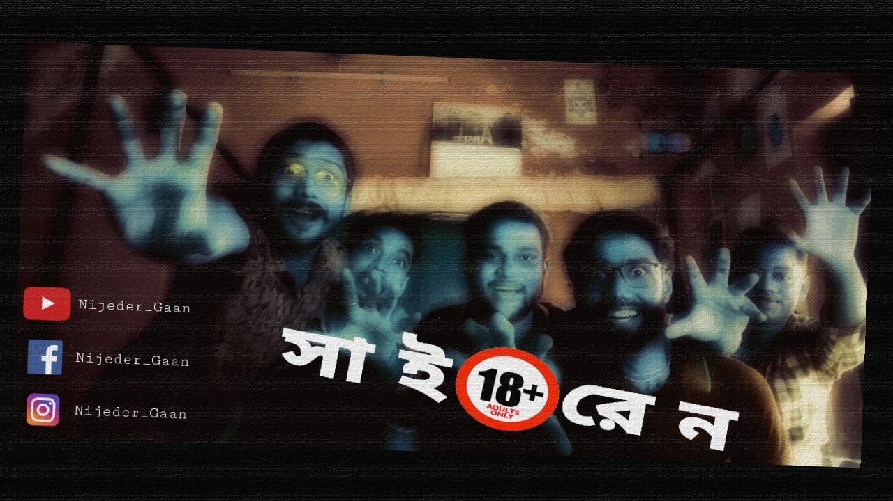

Song credits :
Lyrics & Tune - Indrajit Bala
Vocals - Indrajit Bala,Rajib Dutta, Arghyadeep Chowdhury
Ukelele - Indrajit Bala
Kazoo - Rajib Dutta
Cajon - Niladri Madhab Biswas
Percussion - Shibam Das
Edited & Animation By - Rajib Dutta
Check it out Our Facebook Page 👇

Lyrics :
আঠেরোর সাইরেন
সতেরো বছর ,তিনশো চৌষট্টি দিন,
তেইশ ঘন্টা , ঊনষাট মিনিট
নাবালক থেকে সাবালক
হাতে মাত্র কটা মিনিট
কাল থেকে চলবে নতুন কাটা
নতুন ঘন্টা নতুন মিনিট
ছাড় নেই কোনো ইস্যু তে
ক্রস করলে কোনো লিমিট
যাদের বয়স তেরো-চোদ্দ
পনেরো-ষোলো বা সতেরো
যত পারো করে নাও
পাকামো আর ছ্যাবলামো
কারণ,
যেই পা দেবে আঠেরো
শুনতে পারো খোঁটা বাপেরও
হয়তো ভাবছো অনেক কিছু
মনে মনে তোমার
ভাসছো আবেগে
উড়ছো স্ববেগে
জীবনে তোমার
যত শিগগির বুঝবে তুমি
এই জীবনের কাহিনী
ততই মঙ্গল
চাইবেনা বুঝতে এই তুমি
এই জীবনের কাহিনী
ততই মঙ্গল
জানি একদিন বুঝবে ঠিক তুমি
এই জীবনের কাহিনী
ততই মঙ্গল
তখন ভাববে হায় আমি
না করলেই হত ছ্যাবলামী
ততই মঙ্গল
উড়ু উড়ু মন
থামলে যখন
বয়স বেড়েছে
আমাদের এখন
হা হা..